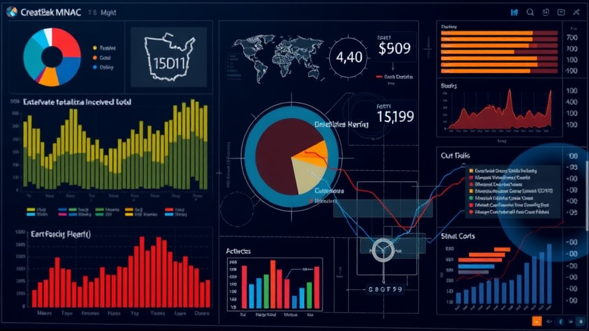

Guide: Data Visualization with Python
Explore popular Python libraries like Matplotlib, Seaborn, and Plotly to create insightful and compelling data visualizations.
By Upingi Team / Published on April 05, 2025
Explore popular Python libraries like Matplotlib, Seaborn, and Plotly to create insightful and compelling data visualizations.
By Upingi Team / Published on April 05, 2025
Raw data, especially in large volumes, can be overwhelming and difficult to interpret. Data visualization translates complex data into visual contexts (charts, graphs, maps), making it easier for the human brain to grasp patterns, trends, outliers, and insights. Python, with its extensive ecosystem of libraries, has become a dominant force in data science, offering powerful and flexible tools for creating a wide range of visualizations.
This guide explores three of the most popular and versatile Python libraries for data visualization: Matplotlib (the foundational library), Seaborn (for statistical plots), and Plotly (for interactive graphics).
Matplotlib is the bedrock of Python visualization. Most other plotting libraries build upon or integrate with it. Key concepts include the Figure (the overall window or page) and the Axes (the actual plot area where data is plotted). It provides functions for creating standard charts like line plots (`plt.plot()`), scatter plots (`plt.scatter()`), bar charts (`plt.bar()`), and histograms (`plt.hist()`).
Matplotlib offers immense flexibility and granular control over every element of a plot (titles, labels, colors, styles). However, achieving sophisticated plots can sometimes require more verbose code compared to higher-level libraries.
import matplotlib.pyplot as plt
# Example data
x = [1, 2, 3, 4]
y = [10, 20, 25, 30]
plt.figure(figsize=(8, 5))
plt.plot(x, y, marker='o')
plt.title('Simple Line Plot')
plt.xlabel('X Axis')
plt.ylabel('Y Axis')
plt.grid(True)
plt.show()Seaborn builds upon Matplotlib to provide a higher-level interface specifically focused on creating informative and attractive statistical graphics. Its strengths include simplifying the creation of complex plots like box plots, violin plots, heatmaps, and pair plots (showing relationships across multiple variables) often with just a single line of code. It integrates seamlessly with Pandas DataFrames, making it easy to plot data directly from your data structures.
While Matplotlib could create these plots, Seaborn offers smarter defaults and requires significantly less code, especially for common statistical visualization tasks. It makes exploring relationships within data much more efficient.
import seaborn as sns
import matplotlib.pyplot as plt
import pandas as pd
# Example using penguins dataset
penguins = sns.load_dataset("penguins")
sns.pairplot(penguins, hue="species")
plt.show()Plotly specializes in creating interactive, publication-quality graphs online. Visualizations created with Plotly can include hover tooltips, zooming, panning, and can be easily embedded in web applications or dashboards (using frameworks like Dash). Plotly Express is a high-level wrapper (similar to Seaborn for Matplotlib) that simplifies the creation of many common interactive plots.
The key differentiator is interactivity. While Matplotlib and Seaborn typically produce static images, Plotly generates dynamic HTML-based graphics, allowing users to explore the data directly within the visualization.
Which library should you use? It often depends on your goal:
Other notable libraries worth exploring include Bokeh (also for interactive plots, similar philosophy to Plotly) and Altair (declarative visualization based on the Vega-Lite grammar).
Python offers a powerful suite of tools for data visualization. Matplotlib provides the fundamental control, Seaborn simplifies statistical plotting, and Plotly brings interactivity to the web. Understanding the strengths of each allows you to select the most appropriate library and visualization type to effectively analyze your data and communicate compelling stories and insights.
The best way to learn is by doing. Explore the official documentation galleries for each library – they are full of examples and inspiration for your next visualization project.